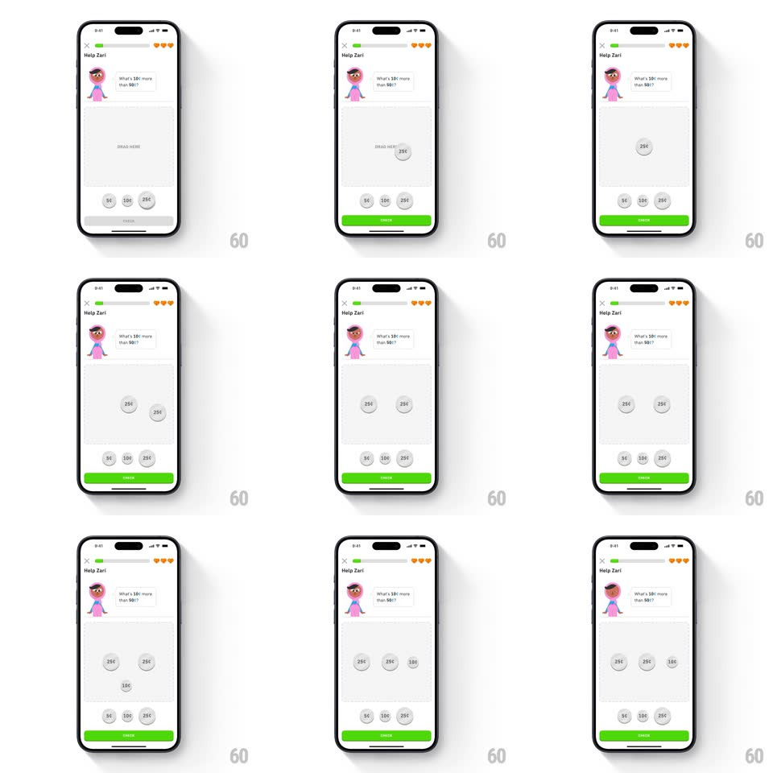

Media
Frame-by-frame

Rebuild this interaction 1:1: Duolingo's coin math puzzle ("Help Zari") - the prompt asks "What's 10c more than 50c?" and you drag coin chips (5c, 10c, 25c) from the bottom tray into the gray drop zone to build the answer, coins stacking in the zone as you drop them, then hitting CHECK.

Rebuild this interaction 1:1: Duolingo's coin math puzzle ("Help Zari") - the prompt asks "What's 10c more than 50c?" and you drag coin chips (5c, 10c, 25c) from the bottom tray into the gray drop zone to build the answer, coins stacking in the zone as you drop them, then hitting CHECK.
## Integration
Integration: stack-agnostic spec - springs given as stiffness/damping, timed motions as duration + curve; map every value to your framework and animation library of choice.
## Scene
White lesson screen: "Help Zari" header with close X, progress bar, and hearts; Zari's speech bubble with the question; a large gray dashed "DRAG HERE" drop zone; a bottom tray of circular coin chips; a green CHECK button at the very bottom.
## Motion spec
Pattern: drag-and-drop tokens into a target zone.
- Touch a coin: it lifts (scale 1 -> 1.15, 150ms) with a soft shadow and follows the finger 1:1.
- Over the zone: the drop zone highlights (border brightens, 150ms).
- Drop: the coin springs into place inside the zone (spring ~380/24, 250ms), arranging in a loose row with other dropped coins; its tray slot stays empty (no ghost).
- Drag out of the zone (or tap a placed coin): it springs back to its tray slot (spring ~340/22).
- CHECK activates (gray -> green, 150ms) once at least one coin is in the zone.
## Calibration
- Coins are gray circles with bold cent values; placed coins keep full size - no shrinking in the zone.
- Multiple coins accumulate; the puzzle expects a sum (e.g. 25c + 25c + 10c = 60c).
## Reduced motion
Coins move on simple 200ms eases without lift or spring; zone highlight fades.
## Don't miss
- Wrong coins can be dropped too - the zone accepts anything, and CHECK judges the sum.
- The tray keeps its layout; empty slots do not collapse.